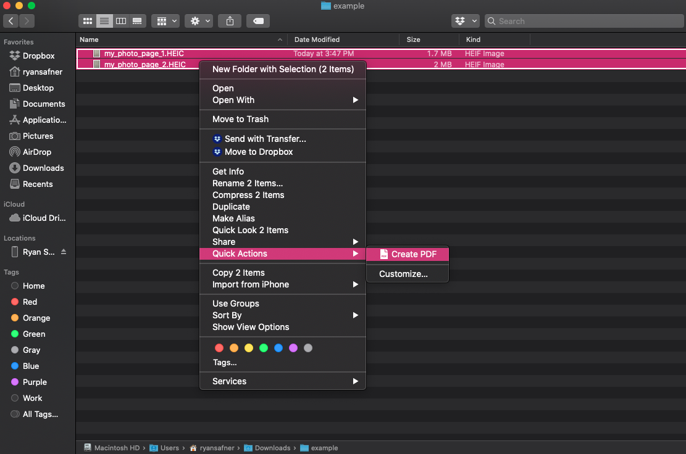
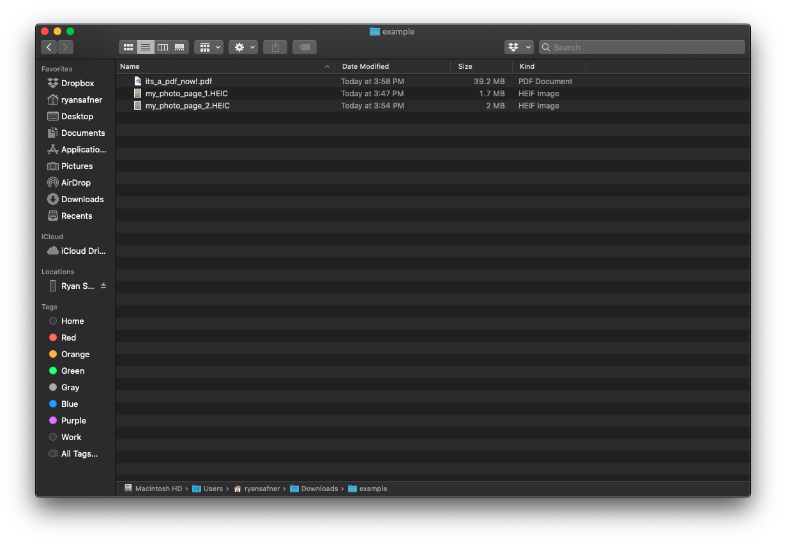
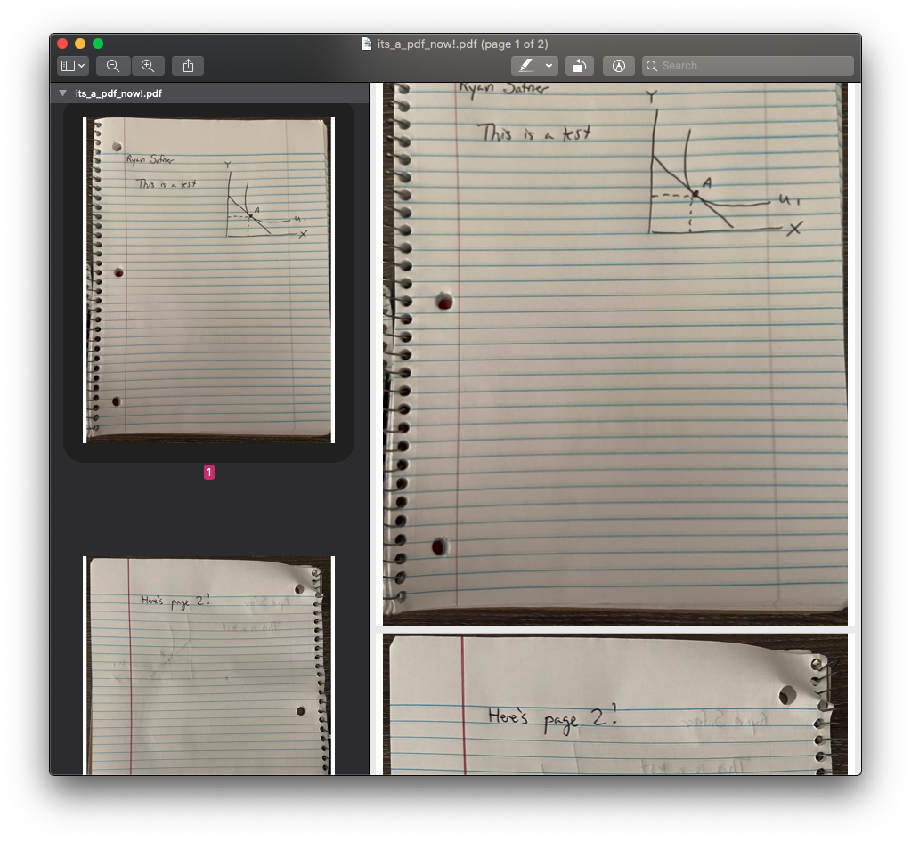

How to Make a PDF
Using an App on Your Phone
There are many good apps out there that will allow you to take photos and convert them to PDFs. This is actually a better method than using your computer (described below), since theses apps optimize your photos for PDFs (using your computer to convert will often result in very large PDF file sizes!). Here are a few apps you can use:
Personally, I use Scannable — primarily because of its association with Evernote, if you wanted a recommendation. But note it does not exist on Android. I also have successfully used Turboscan in the past.
Additionally, as Hood students, you all have Onedrive, you can use the app on your phone to scan documents with photos and convert them to PDFs.
Using Images Sent to Your Computer
Most modern versions of operating system have a built-in tool in the File Viewer (or Finder) menus, after clicking on one or multiple files, to create a PDF from the files.
So first take photos on your smartphone of your written work (one photo per page). Please try to frame your photos properly! Put your paper flat on a solid surface (table, desk, the floor, etc). Get the whole page within the borders of the photo, and not too much background. I don’t need to see half of your desk or bed as you are taking the photo! Take a look at it and make sure it is legible.
Next, get the photos onto your computer (whether by Airdrop, email to yourself, Dropbox, etc.). Finally, depending on your OS, convert the files to a PDF:
1. On a Windows PC
Open the folder where your photos are currently, in the File Explorer. Select all of the photos, and right click, and select Print. In the dialog box that pops up, select Microsoft Print to PDF in the Printer box, and then click Print. This will save it as a .pdf file in that folder. See more information.
2. On a Mac
As I use a Mac, I will show you how Mac OS has a neat feature built into Finder, which allows converting multiple files into a single PDF file as a Quick Action. I have written two pages in a notebook and taken two separate pictures of them, and airdropped them onto my computer.



Here is the example PDF.
3. On Linux
If you use Linux, I assume you know your way around a computer well enough to make a PDF! 🤖